Presentation
Authors: Michał Miotk, Kamil OrłowAgenda
- Introduction
- Weapon Dataset Creator
- SynthDet
- ML->Dataset
- Future Work
- Links
Introduction
Generate weapons dataset from Unity engine instead taking photos of real guns on diffrent backgrounds or pictures from the Internet.
Article

Models 3D
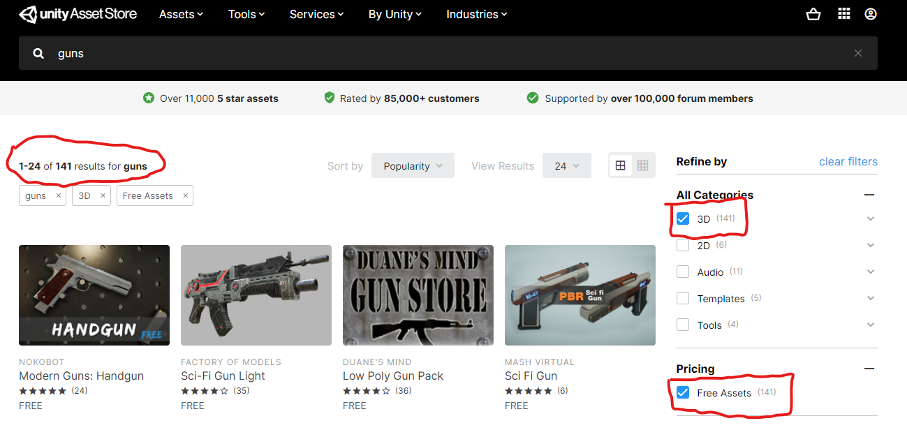Perception
- Dataset Creator
- Synthdet
Weapon DatasetCreator
Random rotatation Glock
Background 2D -> 3D
- Setting objects
- Raycast
- Object pooling
Foreground
- Rotation
- Position
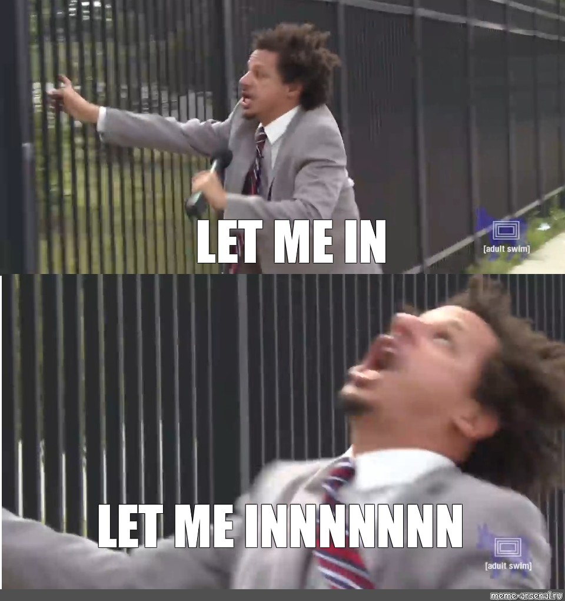
Occlusion
Final result : LIVE
ML - Datasets
1. EdgeAi Weapon Dataset
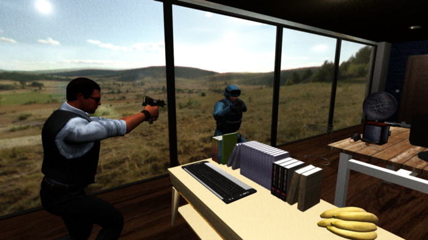
2. Dataset Generated in Unity
Based on free models from assets store - some of them has three instances| 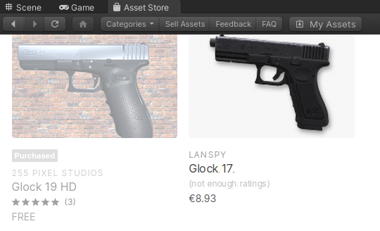 | 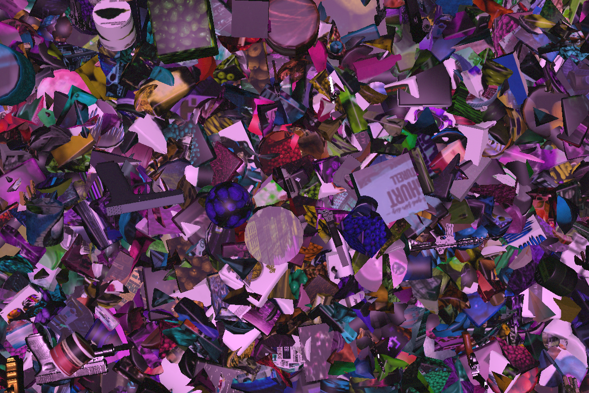 |
|---|
Categories
| 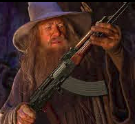 | ||
| 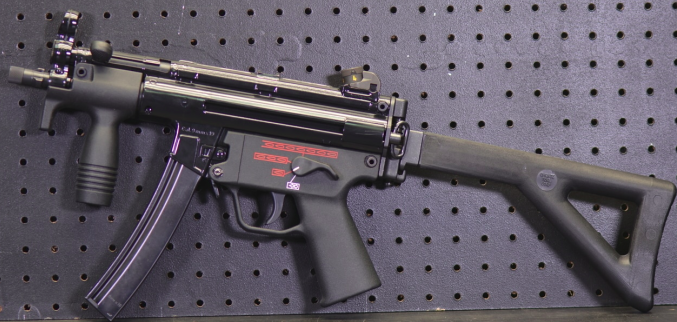 | 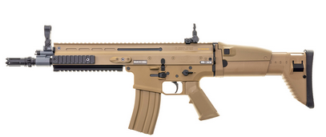 | |
Model configuration
| MODEL type | instance segmentation |
|---|---|
| MODEL.WEIGHTS | mask_rcnn_R_50_FPN_3x |
| MODEL.BACKBONE.FREEZE_AT | 2 |
Training results
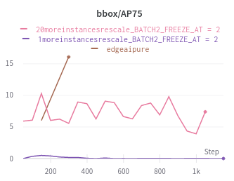Precision on glock detection
Results are presented in streamlit app
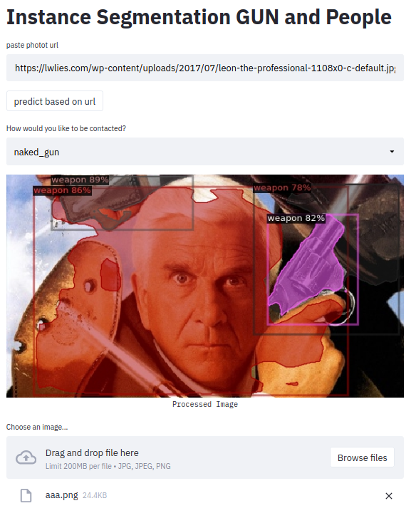Perception package have no scripts to get COCO output
| 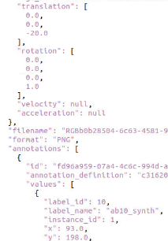 | 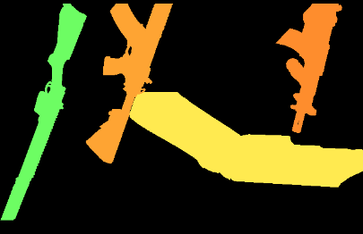 |
AWS sagemaker was used to create test dataset
- maximum 10 labels
- no instance segmentation - only semantic
- own scripts to convert to coco
Future Work
3D bounding box annotation
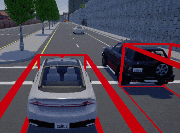Sources
- https://github.com/Unity-Technologies/SynthDet
- https://github.com/Unity-Technologies/com.unity.perception
- https://arxiv.org/abs/1902.09967
- https://docs.unity3d.com/Manual/index.html
- https://github.com/facebookresearch/detectron2
- https://aws.amazon.com/sagemaker/
- https://www.streamlit.io/
- https://github.com/michalmiotk/gun
- https://github.com/michalmiotk/WeaponDatasetCreator
- https://blog.usejournal.com/worlds-first-synthetic-gun-detection-dataset-from-edgecase-ai-dbe3ea8eeb7e
- https://wandb.ai/
Questions ?